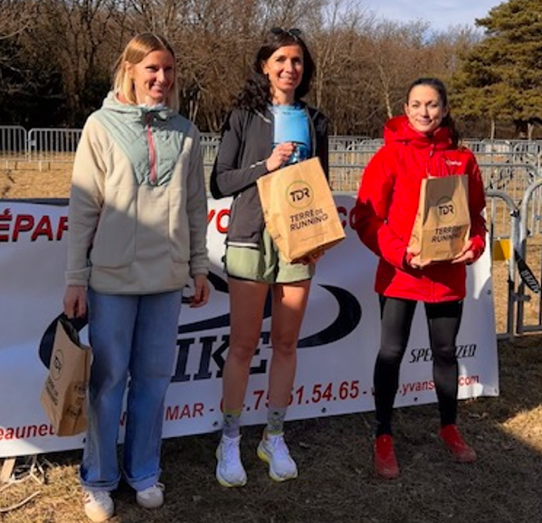
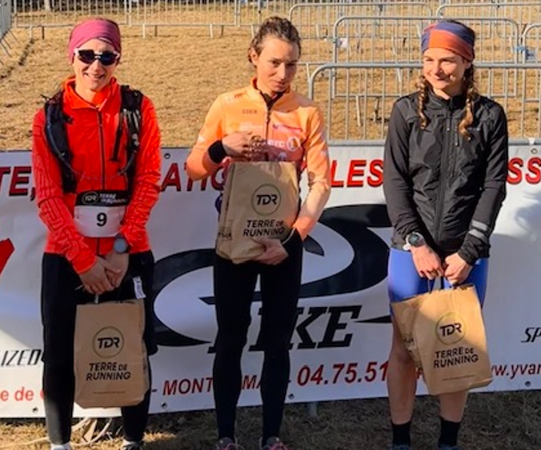

La saison 2026 est lancée. Hier, dimanche 1er février, trois membres de Mrun ont fait le déplacement à Marsanne pour le Défi X Sport Drôme. Une épreuve discrète mais relevée, organisée avec sérieux au col de la Grande Limite — et qui ne pardonne pas le manque de préparation.
🏁 Le terrain
Beau temps mais frais, conditions de course idéales pour ne rien lâcher. L'organisation au col de la Grande Limite était impeccable, et le format reste impitoyable : un trail de 10 km très "casse-pattes" — rapide, beaucoup de relances, une montée finale difficile — suivi pour le format vétathlon d'un circuit VTT de 19 km tout aussi physique.
C'est typiquement le genre de course de début de saison où l'on mesure son foncier hivernal, sans filet, dans un cadre où chaque écart se paie cash.
🏆 Les résultats Mrun
Sur trois partants, l'association décroche deux podiums.
Trail sec — 10 km
- Mathilde Baudelocq3ᵉ Femme 🥉
Vétathlon Solo — 10 km trail + 19 km VTT
- Sophie Gauthier3ᵉ Femme 🥉
- Antoine GauthierFinisher solo
Mathilde signe une 3ᵉ place féminine sur le trail sec. Sophie, alignée sur l'enchaînement complet trail + VTT, prend également la 3ᵉ place féminine du vétathlon solo. Antoine boucle lui aussi l'épreuve complète en solo. Trois engagés, deux podiums, zéro abandon — la définition d'une reprise réussie.


🎬 En images
Fidèle à la mission de Mrun de mettre en avant les épreuves et nos sportifs, voici trois vidéos courtes (1 min) produites par l'association.
Le mot du club
Une reprise solide sur un terrain qui ne pardonne pas le manque de préparation. Bravo à Mathilde, Sophie et Antoine pour avoir porté les couleurs de Mrun sur cette première date du calendrier 2026. La saison est en route — et elle commence sur le bon tempo.
Retour aux communiqués